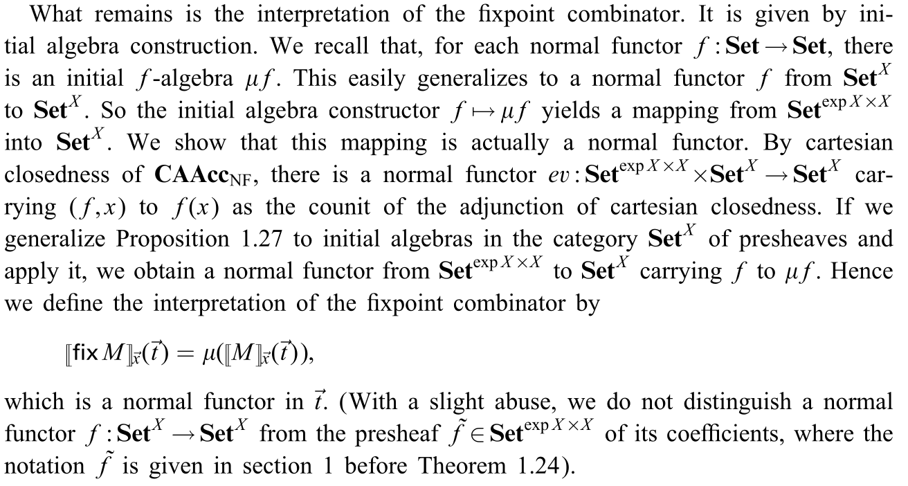

Application: species in functional programming
One of the many ways of formally describing a programming language is via denotational semantics, in which a term $T$ of type $\tau$ is represented by a mathematical object $\llbracket T \rrbracket \in \llbracket\tau\rrbracket$ (its denotation), where $\llbracket\tau\rrbracket$ is a domain, a certain kind of structured set. Terms of type $\sigma\to\tau$ are then interpreted as suitable functions $\llbracket\sigma\rrbracket\to\llbracket\tau\rrbracket$ between domains.1
(Thanks to dpl0a for having written this introduction replacing my lazy fat fingers.)
In this sense, a certain subcategory of the category of analytic functors (the category of normal functors) is a denotational semantics for a certain flavour of $\lambda$-calculus.
Definition (Analytic functor in more than one variable). Let $A$ be a set and $F : \mathbf{Set}^A \to \mathbf{Set}$ a functor ($\mathbf{Set}^A$ is equivalently the product category $\prod_{a\in A}\mathbf{Set}$ and the slice category $\mathbf{Set}/A$; we will make constant use of this equivalence).
We define an analytic functor in $A$ variables as a functor $F$ that results from the left Kan extension of a species in $A$ variables along the obvious functor $\mathbf{B}^A =\prod_{a\in A}\mathbf{B}\to \mathbf{Set}^A$;
[diag]
Given two sets $A$ and $B$, we define an analytic functor $\mathbf{Set}^A \to \mathbf{Set}^B$ as a $B$-indexed family of analytic functors $F_b : \mathbf{Set}^A \to \mathbf{Set}$; this is motivated by the chain of isomorphisms
so every property asked to a functor $\mathbf{Set}^A \to \mathbf{Set}^B$ boils down to a property asked to a $B$-indexed family of functors $\mathbf{Set}^A \to \mathbf{Set}$.
Definition (The category of normal analytic functors). A functor $F : \mathbf{Set}^A \to \mathbf{Set}$ is called normal analytic if it is analytic and results as a coproduct of representables over finitely presentable objects of $\mathbf{Set}^A$; this means that there exists a canonical way to decompose $F$ as $\sum_{i\in I} \mathbf{Set}^A(X_i,-)$, where $X_i$ is a finite set for every $i\in I$ (while there is no restriction on the cardinality of $I$).
A NAF $\mathbf{Set}^A \to \mathbf{Set}^B$ is defined as a $B$-indexed family of NAFs $F_b : \mathbf{Set}^A \to \mathbf{Set}$. We define the category $\mathsf{NAF}$ of normal analytic functors having
- objects the categories $\mathbf{Set}^A, \mathbf{Set}^B,\dots$;
- morphisms the NAFs $\mathbf{Set}^A \to \mathbf{Set}^B$.
This can be promoted to a 2-category taking natural transformations between NAFs as 2-cells, but the choice of which transformations are admissible, in the sense that they preserve analiticity, is a subtle issue. In order for some results to be true, the class of transformations $F \Rightarrow G$ between two NAFs has to be restricted (taking for example only the cartesian natural transformations), collapsed (identifying two natural transformations under a certain equivalence relation), or both.
Now, let’s observe that there is an alternative description of NAFs as “the opposite category of sets” up to equivalence; this result is rooted in a rather deep variety theorem for categories generated under coproducts.
A complete atomic accessible category is a category $\mathcal C$ with finite limits and small coproducts that are disjoint and universal, C being subject to the condition that
(i) the lattice Sub(1) of the subobjects of a terminal object 1 is small, and (ii) every object is a coproduct of atomic elements (“atoms” for short) in the lattice Sub(1). From this it follows that the lattice Sub(1) is a complete atomic Boolean algebra.
This is sufficient to see that a CAAC $\mathcal C$ is equivalent to the free coproduct completion of its set of atoms $A(\mathcal C)$. Since for a discrete category the coproduct completion coincides with the free cocompletion, the canonical functor $\mathcal{C} \to \mathbf{Set}^{A(\mathcal C)}$ is an equivalence if and only if $\mathcal C$ is a CAAC.
This is sufficient to deduce
Theorem (NAF as $\mathbf{Set}^\text{op}$). There is an equivalence of categories between $\mathsf{CAAC}$ and $\mathbf{Set}^\text{op}$, determined identifying a set $A$ with its presheaf category, and a CAAC with the set/lattice of its atoms.
In particular, the category of CAACs is cartesian closed:
Theorem (Cartesian closure of NAAC).
Proof.
The $\lambda$-calculus we are interested in is called PCF. Like all $\lambda$-calculi, PCF xtends the bare $\lambda$-calculus given by the BNF specification
The $\lambda$-calculus we want to study is typed (of course), so we have to specify both types and terms having those types:
For what concerns types,
where $\iota$ is regarded as the type of natural numbers, and $o$ as a type of Boolean values. For what concerns terms,
In this list $x$ is a variable from a fixed (unnamed) countable set, $n$ is a natural number, $\text{fix } M$ is the fixpoint of a term $M$, $\text{suc}$ and $\text{pred}$ behave like the successor and predecessor functions ver natural numbers, $\text{zero?}$ is a test: it returns $t$ if the number is not equal to zero, and $f$ otherwise (so, obviously, ${t,f}$ is a set of truth values). Finally, we have and if-then-else construct.
Thanks to the above theorem we can interpret the category of NAFs as the opposite of the category of sets. Thus, when looking for a denotational semantics for PCF we can interpret types and terms as if they were sets.
In particular, types are interpreted as sets by the following definition:
where $\exp \llbracket \sigma \rrbracket$ is the result of applying the analytic functor of multisets to the object $\llbracket \sigma \rrbracket$.
For the interpretation of a term, we de*ne it on correct typing judgments as
The interpretation $\llbracket M \rrbracket_{\vec x}$ is a normal functor $\mathbf{Set}^{A_1+\dots+A_n} \to \mathbf{Set}^B$ where $A_i = \llbracket \sigma_i\rrbracket$ and $B = \llbracket \tau \rrbracket$. This definition is by induction on construction of terms. What is the most interesting is the interpretation of the fixpoint combinator. But we start with easy ones.
We interpret
-
$\lambda$ terms as
$$ \begin{array}{c} \llbracket x_i\rrbracket_{\vec x}(\vec t) = t_i \\[.5em] \llbracket M\, N\rrbracket_{\vec x}(\vec t) = \text{ev}(\llbracket M\rrbracket_{\vec x}, \llbracket N\rrbracket_{\vec x}) \\[.5em] \llbracket \lambda y^\sigma.M\rrbracket_{\vec x}(\vec t) = \Lambda(\llbracket M\rrbracket_{\vec x,y}(\vec t,-)) \end{array} $$where $\text{ev}$ and $\Lambda$ are respectively evaluation and currying of the cartesian closed structure.
-
Arithmetic and Boolean operations as
$$ \begin{array}{c} \llbracket t\rrbracket = \{1\}, \qquad \llbracket f\rrbracket = \{0\} \\[.5em] \llbracket \text{suc}\rrbracket : [\{n\}, n+1] \mapsto 1 \\[.5em] \llbracket \text{pred}\rrbracket : [\{n+1\}, n] \mapsto 1 \\[.5em] \llbracket \text{pred}\rrbracket : [\{0\}, 0] \mapsto 1 \end{array} $$and zero otherwise.
-
The $\text{zero?}$ test as
$$ \begin{array}{c} \llbracket \text{zero?}\rrbracket : [\{n+1\}, 1] \mapsto 1 \\[.5em] \llbracket \text{zero?}\rrbracket : [\{0\}, 0] \mapsto 1 \\[.5em] \end{array} $$and zero otherwise.
-
The if-then-else construct as the functor $\mathbf{Set}^{\exp 2\times \exp A \times \exp A \times A} \to \mathbf{Set}$, sending $({1}, {a}, _, a)$ and $({0}, _, {a}, a)$ to $1$, and assuming the value $\varnothing$ elsewhere.
Finally, the fixpoint operation $\text{fix}$ is interpreted as an initial algebra construction: …I could transcribe Hasegawa, but what for?

Notes
-
As it’s common in set theoretical foundations of mathematics, functions enjoy an extensionality principle (i.e. are considered equal when they agree on all arguments). Therefore unlike its operational counterpart, denotational semantics is more concerned with the statics of a program, rather than its dynamics. ↩